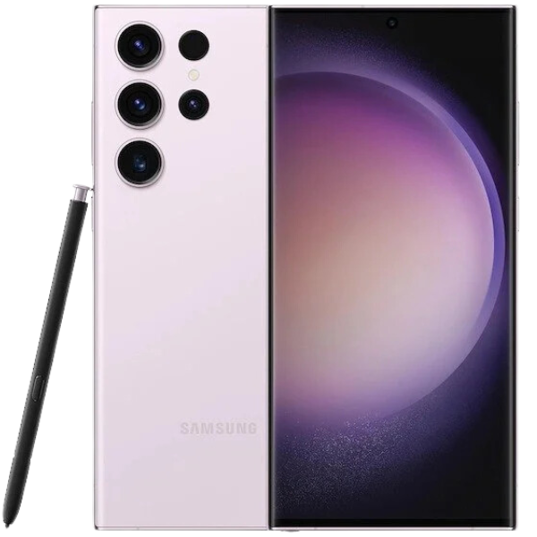

25.000.000đ
Tổng quan: Galaxy S23 Ultra là smartphone cao cấp của Samsung, nổi bật với camera độ phân giải cao, màn hình lớn và hiệu năng mạnh mẽ.
| Màn hình | 6.8 inch Dynamic AMOLED 2X, QHD+ 1440 x 3088, 120Hz |
| Chip xử lý | Snapdragon 8 Gen 2 / Exynos (tùy thị trường) |
| RAM | 12 GB |
| Bộ nhớ trong | 256 GB / 512 GB / 1 TB |
| Hệ điều hành | Android (One UI) |
| Camera sau | Chính 200 MP + 12 MP (ultrawide) + 10 MP (telephoto 10x) + 10 MP (telephoto 3x) |
| Camera trước | 12 MP |
| Pin & Sạc | 5000 mAh, sạc nhanh có dây và không dây |
| Kết nối | 5G, Wi‑Fi 6E, Bluetooth 5.3, NFC |
| Kích thước | ~163.4 x 78.1 x 8.9 mm |
| Trọng lượng | ~234 g |
| Giá tham khảo | 25.000.000đ (tham khảo trong dự án) |
Galaxy S23 Ultra tập trung vào camera và trải nghiệm hiển thị hàng đầu: chụp ảnh chi tiết, quay video 8K tùy chọn và hiệu năng đủ mạnh cho mọi tác vụ.